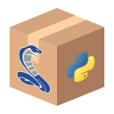

Premiers pas#
DataLab est une plateforme ouverte de traitement de signaux et d’images, conçue pour être utilisée par les scientifiques, ingénieurs et chercheurs du monde académique et industriel, tout en offrant la fiabilité d’un logiciel industriel. C’est un logiciel polyvalent qui peut être utilisé pour un large éventail d’applications, de l’analyse de données simple aux tâches complexes de traitement de signaux et d’analyse d’images.
DataLab s’intègre parfaitement dans votre flux de travail grâce à trois modes de fonctionnement principaux :
Application autonome, avec une interface graphique qui vous permet d’interagir avec vos données et de visualiser les résultats de votre analyse en temps réel. |
|
 |
Bibliothèque Python, vous permettant d’intégrer les fonctions de DataLab (ou les interfaces graphiques) dans vos propres scripts et programmes Python ou des notebooks Jupyter. |
Piloté à distance depuis votre propre logiciel, ou depuis un IDE (par exemple Spyder) ou un notebook Jupyter, en utilisant l’API de DataLab. |
Note
DataLab est l’application de bureau au cœur d’une famille plus large, la plateforme DataLab, qui comprend également une édition native pour navigateur (DataLab-Web) s’exécutant sans aucune installation. Voir La plateforme DataLab pour découvrir les éditions et choisir celle qui correspond à vos besoins.
DataLab s’appuie sur la puissance de Python et de son écosystème scientifique, grâce à l’utilisation des bibliothèques suivantes :
Sigima pour le traitement du signal et de l’image (faisant partie de la plateforme DataLab)
SigimaX pour le framework applicatif Qt sur lequel repose l’application de bureau (faisant partie de la plateforme DataLab)
DataLab-Capsule pour la provenance de l’espace de travail et les capsules d’espace de travail RO-Crate
.dlcapsule(faisant partie de la plateforme DataLab)NumPy pour le calcul numérique (tableaux, algèbre linéaire, etc.)
SciPy pour le calcul scientifique (interpolation, fonctions spéciales, etc.)
scikit-image et OpenCV (facultatif) pour le traitement d’images
PyWavelets pour la transformée en ondelettes
PlotPyStack pour la visualisation interactive de données basée sur Qt
Comment installer DataLab sur votre ordinateur
Installer DataLab sans accès à Internet
Cas d’utilisation et points forts de DataLab
Matrice des fonctionnalités de DataLab
Tutoriels pour apprendre à utiliser DataLab
La plateforme DataLab et ses éditions